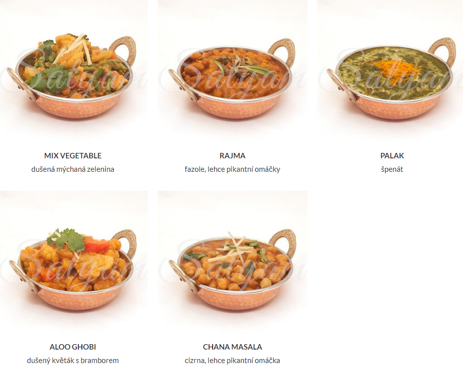
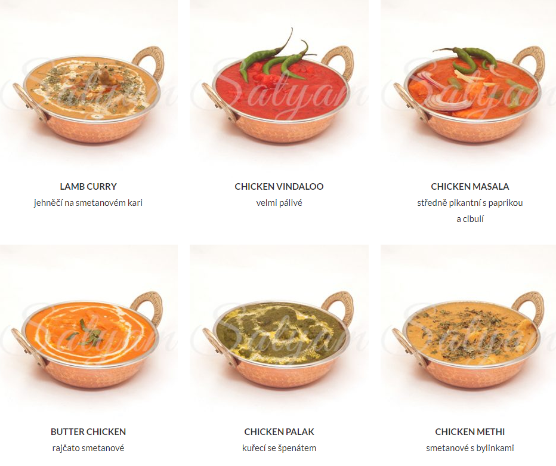
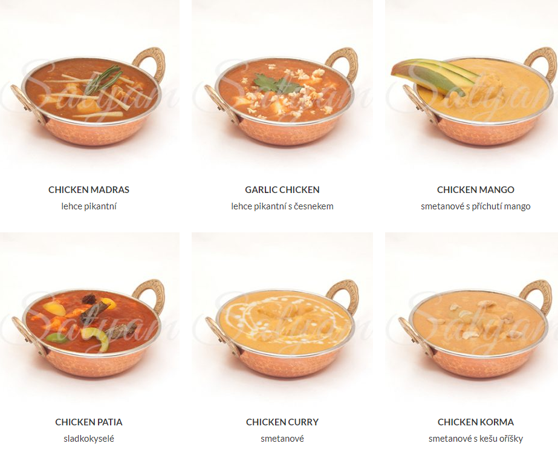
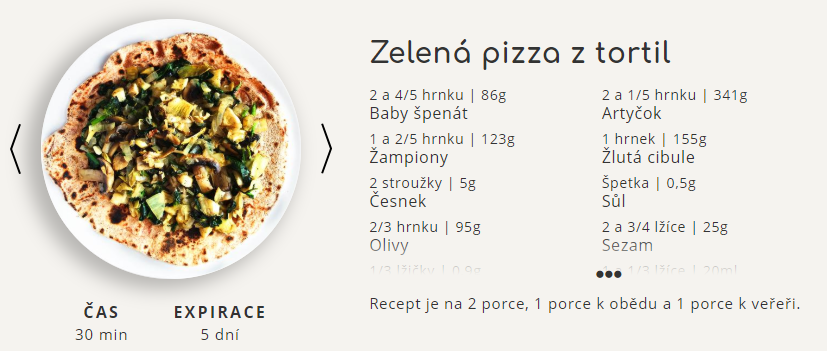
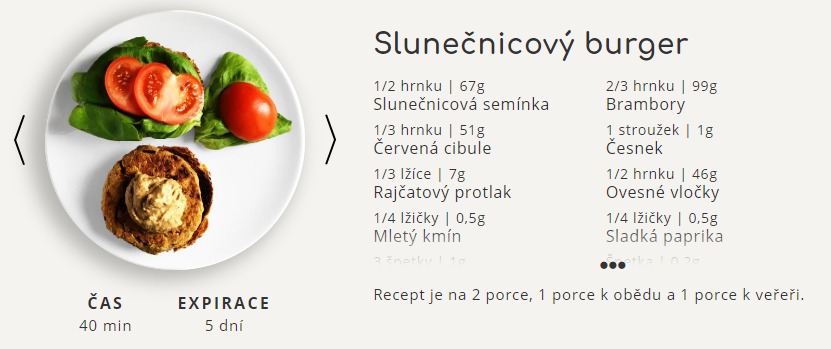
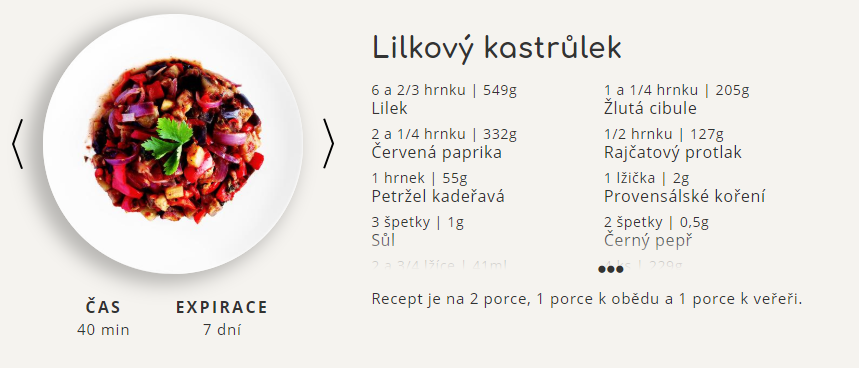
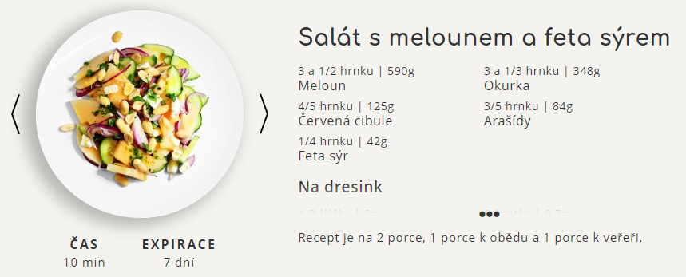
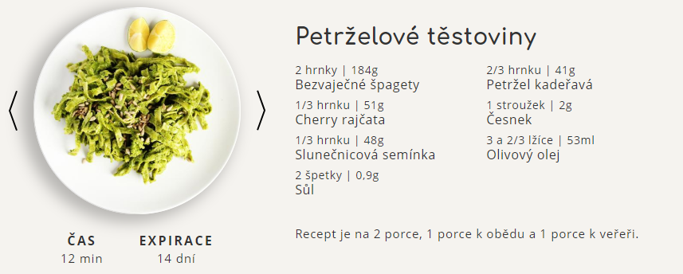
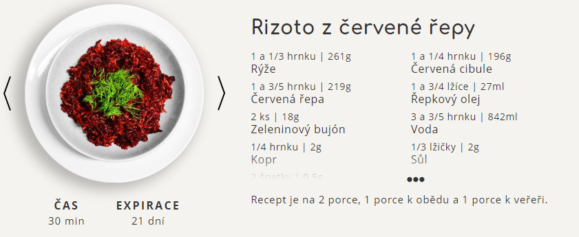

- steak a bramborova kase s kukurici
- zapecena ryba v troube na smetane s houbami, hranolky
- toasty
- s rukolou, syrem, pestem, sunkou, zampiony
- ryze se spenatem, cesnekem a syrem
- testovinovy salat
- zapecene brambory s mletym masem, rajcaty, kukurici, smetanou a houbami
- testoviny s omackou (syr/kure na paprice)
- hamburgery
- ryze se zeleninou/zampiony
- sushi
- sushi rýže, rýžový ocet, řasa nori, sojová omáčka, wasabi
- Bún bò Nam Bô
Pakistani, Indian and South Asian Recipes
http://www.khanapakana.com/recipes.aspx
Indická jídla
http://indickerecepty.cz
http://satyam.cz/vegetarianske-pokrmy/
Koření
- směs garam masala
- kari
- římský kmín mletý
- semínko pískavice
- chilli
- koriandr
- kurkuma
- Zázvor




Zdravý Stůl - app





